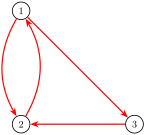
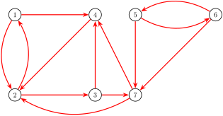
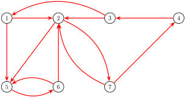

\(\newcommand{\circledNumber}[1]{\boxed{#1}}
\newcommand{\IR}{\mathbb{R}}
\newcommand{\IC}{\mathbb{C}}
\renewcommand{\P}{\mathcal{P}}
\renewcommand{\Im}{\operatorname{Im}}
\newcommand{\RREF}{\operatorname{RREF}}
\newcommand{\vspan}{\operatorname{span}}
\newcommand{\setList}[1]{\left\{#1\right\}}
\newcommand{\setBuilder}[2]{\left\{#1\,\middle|\,#2\right\}}
\newcommand{\unknown}{\,{\color{gray}?}\,}
\newcommand{\drawtruss}[2][1]{
\begin{tikzpicture}[scale=#1, every node/.style={scale=#1}]
\draw (0,0) node[left,magenta]{C} --
(1,1.71) node[left,magenta]{A} --
(2,0) node[above,magenta]{D} -- cycle;
\draw (2,0) --
(3,1.71) node[right,magenta]{B} --
(1,1.71) -- cycle;
\draw (3,1.71) -- (4,0) node[right,magenta]{E} -- (2,0) -- cycle;
\draw[blue] (0,0) -- (0.25,-0.425) -- (-0.25,-0.425) -- cycle;
\draw[blue] (4,0) -- (4.25,-0.425) -- (3.75,-0.425) -- cycle;
\draw[thick,red,->] (2,0) -- (2,-0.75);
#2
\end{tikzpicture}
}
\newcommand{\trussNormalForces}{
\draw [thick, blue,->] (0,0) -- (0.5,0.5);
\draw [thick, blue,->] (4,0) -- (3.5,0.5);
}
\newcommand{\trussCompletion}{
\trussNormalForces
\draw [thick, magenta,<->] (0.4,0.684) -- (0.6,1.026);
\draw [thick, magenta,<->] (3.4,1.026) -- (3.6,0.684);
\draw [thick, magenta,<->] (1.8,1.71) -- (2.2,1.71);
\draw [thick, magenta,->] (1.6,0.684) -- (1.5,0.855);
\draw [thick, magenta,<-] (1.5,0.855) -- (1.4,1.026);
\draw [thick, magenta,->] (2.4,0.684) -- (2.5,0.855);
\draw [thick, magenta,<-] (2.5,0.855) -- (2.6,1.026);
}
\newcommand{\trussCForces}{
\draw [thick, blue,->] (0,0) -- (0.5,0.5);
\draw [thick, magenta,->] (0,0) -- (0.4,0.684);
\draw [thick, magenta,->] (0,0) -- (0.5,0);
}
\newcommand{\trussStrutVariables}{
\node[above] at (2,1.71) {\(x_1\)};
\node[left] at (0.5,0.866) {\(x_2\)};
\node[left] at (1.5,0.866) {\(x_3\)};
\node[right] at (2.5,0.866) {\(x_4\)};
\node[right] at (3.5,0.866) {\(x_5\)};
\node[below] at (1,0) {\(x_6\)};
\node[below] at (3,0) {\(x_7\)};
}
\newcommand{\lt}{<}
\newcommand{\gt}{>}
\newcommand{\amp}{&}
\definecolor{fillinmathshade}{gray}{0.9}
\newcommand{\fillinmath}[1]{\mathchoice{\colorbox{fillinmathshade}{$\displaystyle \phantom{\,#1\,}$}}{\colorbox{fillinmathshade}{$\textstyle \phantom{\,#1\,}$}}{\colorbox{fillinmathshade}{$\scriptstyle \phantom{\,#1\,}$}}{\colorbox{fillinmathshade}{$\scriptscriptstyle\phantom{\,#1\,}$}}}
\)
Linear Algebra for Team-Based Inquiry Learning
2023 Early Edition
Steven Clontz
Drew Lewis
University of South Alabama
University of South Alabama
December 22, 2022
Section A.2: Computer Science: PageRank Activity A.2.1: The $978,000,000,000 Problem (~10 min)
In the picture below, each circle represents a webpage, and each arrow represents a link from one page to another.
Figure 1. A seven-webpage networkBased on how these pages link to each other, write a list of the 7 webpages in order from most important to least important.
Observation A.2.2: The $978,000,000,000 Idea
Links are endorsements. That is:
A webpage is important if it is linked to (endorsed) by important pages.
A webpage distributes its importance equally among all the pages it links to (endorses).
Example A.2.3
Consider this small network with only three pages. Let \(x_1, x_2, x_3\) be the importance of the three pages respectively.
Figure 2. A three-webpage network
\(x_1\) splits its endorsement in half between \(x_2\) and \(x_3\)
\(x_2\) sends all of its endorsement to \(x_1\)
\(x_3\) sends all of its endorsement to \(x_2\text{.}\)
This corresponds to the page rank system :
\begin{alignat*}{4}
&& x_2 && &=& x_1 \\
\frac{1}{2} x_1&& &+&x_3 &=& x_2\\
\frac{1}{2} x_1&& && &=& x_3
\end{alignat*}
Observation A.2.4
Figure 3. A three-webpage network
\begin{alignat*}{4}
&& x_2 && &=& x_1 \\
\frac{1}{2} x_1&& &+&x_3 &=& x_2\\
\frac{1}{2} x_1&& && &=& x_3
\end{alignat*}
\begin{equation*}
\left[\begin{array}{ccc}0&1&0\\\frac{1}{2}&0 & 1\\\frac{1}{2}&0&0\end{array}\right]
\left[\begin{array}{c}x_1\\x_2\\x_3\end{array}\right]
=
\left[\begin{array}{c}x_1\\x_2\\x_3\end{array}\right]
\end{equation*}
By writing this linear system in terms of matrix multiplication, we obtain the page rank matrix \(A
=
\left[\begin{array}{ccc}
0 & 1 & 0 \\
\frac{1}{2} & 0 & 1 \\
\frac{1}{2} & 0 & 0
\end{array}\right]\) and page rank vector \(\vec{x}=\left[\begin{array}{c} x_1 \\ x_2 \\ x_3 \end{array}\right]\text{.}\)
Thus, computing the importance of pages on a network is equivalent to solving the matrix equation \(A\vec{x}=1\vec{x}\text{.}\)
Activity A.2.5 (~5 min)
Thus, our $978,000,000,000 problem is what kind of problem?
\begin{equation*}
\left[\begin{array}{ccc}0&1&0\\\frac{1}{2}&0&\frac{1}{2}\\\frac{1}{2}&0&0\end{array}\right]
\left[\begin{array}{c}x_1\\x_2\\x_3\end{array}\right]
=
1\left[\begin{array}{c}x_1\\x_2\\x_3\end{array}\right]
\end{equation*}
An antiderivative problem
A bijection problem
A cofactoring problem
A determinant problem
An eigenvector problem
Activity A.2.6 (~10 min)
Find a page rank vector \(\vec x\) satisfying \(A\vec x=1\vec x\) for the following network's page rank matrix \(A\text{.}\)
That is, find the eigenspace associated with \(\lambda=1\) for the matrix \(A\text{,}\) and choose a vector from that eigenspace.
Figure 4. A three-webpage network
\begin{equation*}
A
=
\left[\begin{array}{ccc}
0 & 1 & 0 \\
\frac{1}{2} & 0 & 1 \\
\frac{1}{2} & 0 & 0
\end{array}\right]
\end{equation*}
Observation A.2.7
Row-reducing \(A-I
=
\left[\begin{array}{ccc}
-1 & 1 & 0 \\
\frac{1}{2} & -1 & 1 \\
\frac{1}{2} & 0 & -1
\end{array}\right]
\sim
\left[\begin{array}{ccc}
1 & 0 & -2 \\
0 & 1 & -2 \\
0 & 0 & 0
\end{array}\right]\) yields the basic eigenvector \(\left[\begin{array}{c} 2 \\ 2 \\1 \end{array}\right]\text{.}\)
Therefore, we may conclude that pages \(1\) and \(2\) are equally important, and both pages are twice as important as page \(3\text{.}\)
Activity A.2.8 (~5 min)
Compute the \(7 \times 7\) page rank matrix for the following network.
Figure 5. A seven-webpage networkFor example, since website \(1\) distributes its endorsement equally between \(2\) and \(4\text{,}\) the first column is \(\left[\begin{array}{c} 0 \\ \frac{1}{2} \\ 0 \\ \frac{1}{2} \\ 0 \\ 0 \\ 0 \end{array}\right]\text{.}\)
Activity A.2.9 (~10 min)
Find a page rank vector for the given page rank matrix.
\begin{equation*}
A=\left[\begin{array}{ccccccc}
0 & \frac{1}{2} & 0 & 0 & 0 & 0 & 0 \\
\frac{1}{2} & 0 & 0 & 1 & 0 & 0 & \frac{1}{2} \\
0 & \frac{1}{2} & 0 & 0 & 0 & 0 & 0 \\
\frac{1}{2} & 0 & \frac{1}{2} & 0 & 0 & 0 & \frac{1}{2} \\
0 & 0 & 0 & 0 & 0 & \frac{1}{2} & 0 \\
0 & 0 & 0 & 0 & \frac{1}{2} & 0 & 0 \\
0 & 0 & \frac{1}{2} & 0 & \frac{1}{2} & \frac{1}{2} & 0
\end{array}\right]
\end{equation*}
Figure 6. A seven-webpage network Which webpage is most important?
Observation A.2.10
Since a page rank vector for the network is given by \(\vec x\text{,}\) it's reasonable to consider page \(2\) as the most important page.
\begin{equation*}
\vec{x}
=
\left[\begin{array}{c} 2 \\ 4 \\2 \\ 2.5 \\ 0 \\ 0 \\ 1\end{array}\right]
\end{equation*}
Based upon this page rank vector, here is a complete ranking of all seven pages from most important to least important:
\begin{equation*}
2, 4, 1, 3, 7, 5, 6
\end{equation*}
Figure 7. A seven-webpage network
Activity A.2.11 (~10 min)
Given the following diagram, use a page rank vector to rank the pages \(1\) through \(7\) in order from most important to least important.
Figure 8. Another seven-webpage network